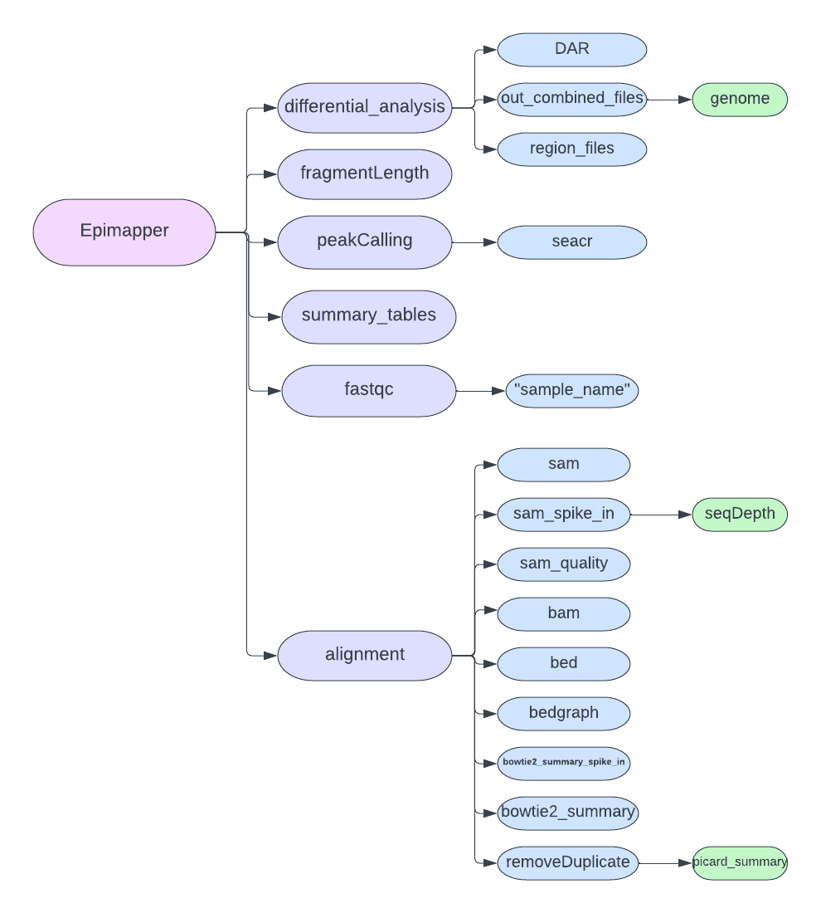

EpiMapper
A Python package containing a full data analysis pipeline of ChIP-seq, CUT&RUN, ATAC-seq and CUT&Tag data.
Contents:
positional arguments: - task: Pipeline task to run
optional arguments: - -h, –help: Show this help message and exits
Usage: epimapper <task> [<args>]
Tasks available for using:
fastqc: Performs quality control on raw reads fastq files from high-thoughput sequencing.
bowtie2_alignment: Mapping reads to a reference genome with Bowtie2 alignment of fastq sequencing reads files from high-thoughput sequecing, and visulizing results.
remove_duplicates: Remove duplicated reads mapped to the same place in of a reference genome during alignment, and visulizing results.
fragment_length: Evaluation of mapped fragment length distribution of input SAM files exported from high-thoughput sequencing alignment, and visulizing results.
spike_in_calibration: Removes experimental bias by normalizing fragment counts based on sequencing depth to a spike-in genome and visulizes results.
peak_calling: Finds enriched regions/calls for peaks from chromatin profiling data with SEACR or MACS2, then visulizes results.
heatmap: Visualizes the enrichment of target protein in predefined genomic regions and peaks by creating heatmaps.
differential_analysis:Preforms differntial analysis on enriched reagions/peaks before annotating the stastitically significant changes to spesific genomic reagions and visulizing the results.
Files needed for a complete run of the pipeline:
Required:
FASTQ: Text files that contains the sequence data from next generation sequencing. The files must be stored togheter in one single directory.
Chromosome Sizes: Text file containin one column with information the chromosome sizes of the genome.
Genome Blacklist: A BED file conaining genome that should be avoided in the data analysis (i.e highly repetative regions)
Genome RefFlat Reference: A text (.txt) file containing the reference genome in RefFlat format.
either - Bowtie2 Indexing Files: Input file folder of Bowtie2 reference genome indexing files. or - Reference Genome FASTA: Input reference genome FASTA file for the creation of Bowtie2 reference genome.
Optional:
Enchancher: A sorted BED file containing the enhancer regions. This will be used as a refereence for annotation of the differntially bound marks.
Name requirements for files:
All input FASTQ files must follow a naming protocal, this is to ensure smooth transitions between the pipeline´s functions. The naming protocal is as following:
[SAMPEL-NAME]_rep[REPLICATION-NUMBER]_[R1/R2]_[(TECHNICAL-REPLICATE)].fastq
- The sampl name section must not contain underscore “_” or dot “.” in the name.
If there are none technical replicates, just skip the number.
Some examples:
H4K3me3_rep1_R2.fastq
ZNF143-Control-48h_rep1_R1.fastq
IgG_rep1_R2_001.fastq
Control-sample_rep2_R2.fastq
H4K27me3_rep1_R2_3.fastq
Any-thing-you-want-except-underscore-or-dot_rep2_R2.fastq
Output created by the pipeline
After a complete run of the EpiMapper pipeline you will be left with several newly created folders following the directory structure below.
{kind=link}
As the figure shows, and to make it eaiser for the user the main output directory “Epimapper” contains all the output from every subfunction. Please see each functions´documentation page to gain further knowledge about the output file of each repective function.